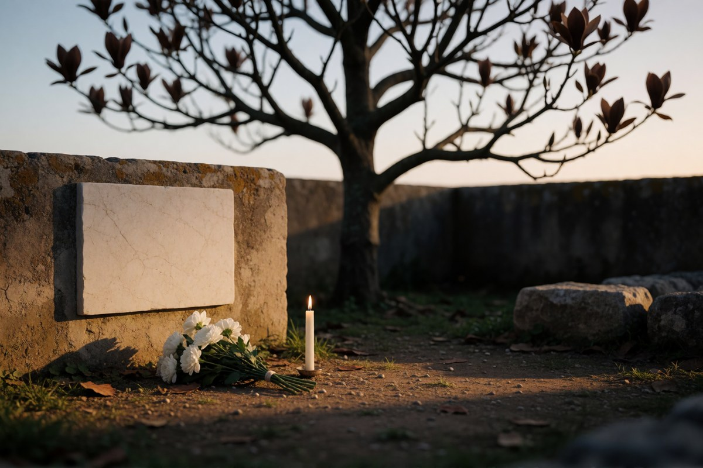

Cronaca · 21 novembre 2026
Maria Falcone: «Mio fratello si fidava di De Gennaro»

La sorella di Giovanni Falcone ricorda la Pizza Connection e il maxiprocesso, e dice di non sentirsi di aggiungere altro. Attorno a lei le voci dell'antimafia si dividono fra il silenzio, il rispetto e il sospetto.
di Franco Zanghì
Maria Falcone, sorella del giudice Giovanni Falcone, ha parlato all'ANSA della morte di Gianni De Gennaro. Ha detto di essere «molto colpita e addolorata per questa tragedia».
L'ex capo della Polizia, 78 anni, è morto nella sua casa di campagna in provincia di Grosseto. Era indagato dalla Procura di Caltanissetta per depistaggio sulla strage di via D'Amelio: indagato, non condannato.
«So che di Gianni De Gennaro mio fratello Giovanni si fidava totalmente», dice Maria Falcone. Insieme, ricorda, lavorarono all'inchiesta sulla Pizza Connection e al maxiprocesso di Palermo, «due momenti fondamentali nella lotta alla mafia».
«Non mi sento di dire altro»
De Gennaro era stato anche nel consiglio della Fondazione Falcone, che Maria Falcone presiede. «Non mi sento di dire altro», conclude. «Di certo so che è stato un amico di mio fratello».
In un'intervista a la Repubblica, ripresa da BlogSicilia, la presidente della Fondazione aggiunge di non essere nelle condizioni di parlare. È la misura che tiene insieme le due cose: il ricordo di un uomo che il fratello stimava e il rispetto per un'inchiesta ancora aperta.
Le altre voci
Attorno a quelle parole, nella stessa giornata, l'antimafia si è divisa. Alfredo Morvillo, magistrato e fratello di Francesca Morvillo, uccisa a Capaci con Falcone, ha scelto la via più breve: «Credo che questo sia il momento per tacere e per pregare».
Enzo Bianco, che da ministro dell'Interno lo nominò capo della Polizia, ha detto che «oggi è il giorno del rispetto per l'uomo». Giuseppe Costanza, l'autista di Giovanni Falcone sopravvissuto alla strage di Capaci, ha tagliato corto: «Oggi è morto un uomo. E basta».
Angelo Corbo, agente della scorta scampato anche lui a Capaci, ha parlato di una doppia sofferenza, e ha detto di temere che qualche altro armadio resti chiuso per sempre.
Chi non si ferma
Non tutti, però, si sono fermati al cordoglio. Antonio Ingroia, già pubblico ministero a Palermo, sostiene che De Gennaro abbia mancato l'appuntamento con la verità, e richiama le intercettazioni raccolte dalla Procura di Caltanissetta.
Salvatore Borsellino, fratello di Paolo, si è mosso sulla linea opposta a quella del cordoglio istituzionale, insistendo sul tema dell'istigazione, cioè su che cosa abbia portato a quel gesto. E Giuseppe Di Lello, magistrato del pool antimafia di Palermo negli anni Ottanta, ha attaccato direttamente i pubblici ministeri nisseni.
Sono posizioni lontanissime, e conviene dirlo: nessuna di queste voci ha in mano gli atti. Li hanno due procure, Grosseto per la morte e Caltanissetta per il depistaggio.
Il punto
In mezzo a tutto questo, le parole di Maria Falcone sono le uniche che non chiedono niente a nessuno. Ricordano un pezzo di storia — la Pizza Connection, il maxiprocesso — e si fermano lì, dove finiscono i fatti che lei conosce.
Il resto, compresa la domanda sull'agenda rossa di Paolo Borsellino, resta aperto. E la risposta non arriverà dalle dichiarazioni, ma dalle carte.
Fonti
- ANSA, le dichiarazioni di Maria Falcone sulla morte di Gianni De Gennaro, 21 novembre 2026, ore 16:52
- BlogSicilia, «Morte De Gennaro, l'antimafia si spacca tra pietas e sospetti. Due procure al lavoro tra Grosseto e Caltanissetta», 22 novembre 2026
- la Repubblica, le interviste a Maria Falcone e a Giuseppe Di Lello, 21 e 22 novembre 2026
- Il Fatto Quotidiano, «De Gennaro, l'ex capo della Polizia indagato per via D'Amelio, si è suicidato», 21 novembre 2026
- Sky TG24 e Italia Sette, le reazioni del 21 novembre 2026
Le dichiarazioni sono riportate come le hanno pubblicate le testate citate. Gianni De Gennaro era indagato e non condannato: per lui valeva la presunzione d'innocenza, e la morte estingue il reato. In questo articolo non sono riportati dettagli sulle modalità materiali della morte. Se stai attraversando un momento difficile, non restare da solo: il Telefono Amico Italia risponde al numero 02 2327 2327.